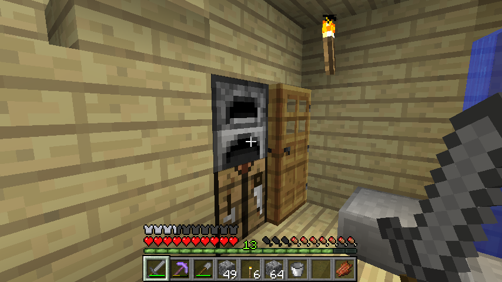

首页
上一页
1
2
2
3
4
5
6
7
下一页
末页
defanive2
无尽黑夜
14
这里又可以看到1.3的变化了，对比上一楼的经验条，可以看到挖矿之后得到了经验，而且不少
不过这是钻石矿，经验自然多
这里注意一下，挖钻石矿之前请情况周围的石头，保证周围没有岩浆之类的让钻石废了
我在挖之前已经清理过了
53楼
2012-08-02 16:27
defanive2
无尽黑夜
14
获得钻石稿！开挖黑曜石
挖足4个就可以造附魔台了
54楼
2012-08-02 16:29
defanive2
无尽黑夜
14
合成书的时候突然发现旧公式无法合成了，去wiki查了一下才发现这个
1.3书的合成公式改变了，除了3张纸还需要一张皮革，感觉比较符合常识
不过同时也让书成本更加高了，书架也是
考虑一下书架，新公式下，一个书架=6块木板+3本书=6木板+9甘蔗+3皮革
附魔要达到最高等级需要15本书，考虑皮革的话既是45个皮革
这就要求附魔除了要有甘蔗场，还需要有养牛场
1.3带来的变化还真的挺大
至于可写的书，慢慢再来玩
55楼
2012-08-02 16:33
defanive2
无尽黑夜
14
合成附魔台！
56楼
2012-08-02 16:34
defanive2
无尽黑夜
14
放置好附魔台，注意要给书架预留位置
我打算是把周围的白桦木板拆掉换成书架，这样书架和墙面融合在一起，应该会很好看
57楼
2012-08-02 16:35
defanive2
无尽黑夜
14
花1个等级附魔石稿
这里题外话一下，1.3以前经验是类指数型增长的，也就是说升级1->2要比0->1花的经验要多
在这种情况下，要附魔某个等级，刚刚升到那个等级进行附魔是最合算的
而1.3更改了经验的计算，前16级（貌似是？wiki上的具体数字忘了）是线性增长的，也就是说16级以前每1级所花的经验是等同的，16级以上就是类指数型
现在的情况下，16级以下的附魔在16级以下进行都是不浪费的
59楼
2012-08-02 16:40
defanive2
无尽黑夜
14
几乎毫无疑问，得到了效率1附魔，对挖矿可以省下很多时间
60楼
2012-08-02 16:41
defanive2
无尽黑夜
14
附魔得到了效率1，挖矿可以省下很多时间
61楼
2012-08-02 16:42
defanive2
无尽黑夜
14
附魔的稿子挖东西就是快，现在挖防火间里面发现的铁矿
大家注意一下经验条，这里又是1.3的另外一个挖矿特征
62楼
2012-08-02 16:43
defanive2
无尽黑夜
14
挖完了，但是经验毫无增长
1.3里面挖矿得到经验应该是只对挖矿可以得到矿物的矿产有效，例如煤，红石，青金石，钻石
63楼
2012-08-02 16:45
defanive2
无尽黑夜
14
这里也是1.3的一个更新，注意一下经验条
正在烧铁矿得到铁的过程
64楼
2012-08-02 16:46
defanive2
无尽黑夜
14
熔化完毕，准备取出铁块
65楼
2012-08-02 16:47
defanive2
无尽黑夜
14

取出铁块之后，得到了经验，不过可见经验得到的很少
熔化和挖矿得到的经验可以从wiki
查表可以知道，挖一个煤矿，从挖矿过程平均可以得到1经验（0-2），不能熔化
而挖一个铁矿，从挖矿过程不能得到经验，熔化时得到0.7经验（7经验/10个）
所以从经验的角度上来说，挖煤反而可以得到更多经验
而且如果算上挖出来的煤作为燃料进行熔化的经验的话，就更多了
可见这又是1.3里面的一个变化
66楼
2012-08-02 16:52
defanive2
无尽黑夜
14
好了，我去继续挖防火间，并且装潢，一会再来直播
67楼
2012-08-02 16:53
defanive2
无尽黑夜
14
这个算是1.3的BUG吧，当挖雪挖得太快的时候，可能entity太多了，导致了雪人一时消失，过一会又出现了
光影上有时候也会有点BUG
71楼
2012-08-02 17:26
defanive2
无尽黑夜
14
装潢好了，干净的白色
72楼
2012-08-02 17:28
defanive2
无尽黑夜
14
储存室也摆好箱子了，用了很多木头，中途不够用了出去砍了树
得益于周围的环境，树木很多
虽然想视野开阔一点，不过还是不想把树全部砍光，等闲下来了就种回去
73楼
2012-08-02 17:31
defanive2
无尽黑夜
14
接下来我打算整理一下物品，把东西放到储物间里面
然后开始做甘蔗场和小麦场，都打算做在室内的地下室
室外过一百米左右的地方打算做养牛场
75楼
2012-08-02 17:34
defanive2
无尽黑夜
14
1.3牌子的合成公式没变，但是产物数量变了，从1个变成了3个，同时牌子也可以堆叠了
这个是个好消息，牌子在各种场景用途很大，无法堆叠实在是很头疼，现在就好很多了
77楼
2012-08-02 18:57
defanive2
无尽黑夜
14
一个小黑在我屋檐上。。出去跟它单挑但是没打死小黑就跑掉了
78楼
2012-08-02 18:59
defanive2
无尽黑夜
14
南瓜场产量还是不错的
79楼
2012-08-02 19:00
defanive2
无尽黑夜
14
分类放好了
80楼
2012-08-02 19:01
defanive2
无尽黑夜
14
主楼的箱子只是放工具，方便拿
81楼
2012-08-02 19:02
defanive2
无尽黑夜
14
小小插曲一下，到了矿井下面发现有一块草 = =
明显是某只小黑（跟我单挑那只？）拿下来的
82楼
2012-08-02 19:03
defanive2
无尽黑夜
14
铺好甘蔗场的地
白桦木的用量实在是太大了。。
83楼
2012-08-02 19:04
defanive2
无尽黑夜
14
建设好了，不过甘蔗明显不足
等天亮了出去寻觅一下野生甘蔗
85楼
2012-08-02 19:07
defanive2
无尽黑夜
14
沿着湖走了好远找到了一些
86楼
2012-08-02 19:08
defanive2
无尽黑夜
14
走到沙漠了，但是发现自己饥饿条已经爆了。。
顺便说一下我周围的生存环境
屋子是在森林里面，前方是湖较为安全，周围有高山（绿宝石啊），沙漠，沙漠再往远点走就到雪原，总之各种资源都是比较充足的，表示对自己选址比较满意
等基础资源都充足了，探索地图，如果湖连接到大海的话可以考虑建一个码头出海方便
87楼
2012-08-02 19:12
defanive2
无尽黑夜
14
终于到家了，不过饥饿条没了，如果是hard的话我就死了。。
不过嘛随意玩玩不开hard了
88楼
2012-08-02 19:13
defanive2
无尽黑夜
14
回家吃完了牛肉（虽然还有一堆没煮的生肉），决定吃腐肉
PS初期杀了一大堆牛，因为周围都是，得到点食物+集够一套皮革防具，虽然皮革防具没什么用，但是总比没有好
牛还是留了很多没杀，这样可以圈养开养牛场
特别是现在书需要皮革才能合成，养牛场需求就更紧迫了
89楼
2012-08-02 19:16
首页
上一页
1
2
2
3
4
5
6
7
下一页
末页